WebServi Telemetry Engine & IoT SCADA
Demostración interactiva en tiempo real: transformación de datos crudos (JSON) captados desde routers MikroTik CCR, estaciones meteorológicas LoRaWAN y sensores de campo hacia un panel de mando web de alta disponibilidad.
Carrier Entel Bolivia
Sondeo ICMP Gateway PrincipalCarrier Tigo Bolivia
Sondeo ICMP Gateway SecundarioStarlink Business + LTE
Respaldo Satelital de Contingencia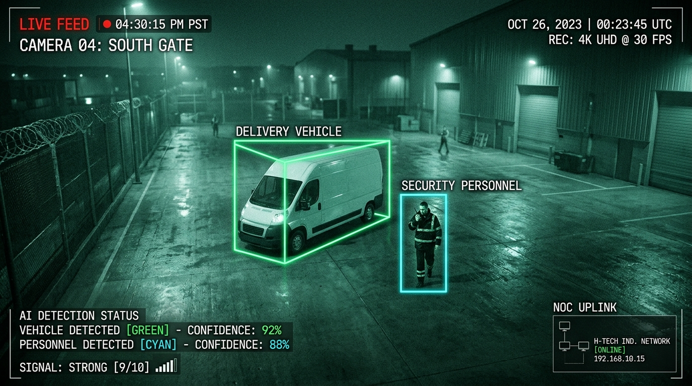
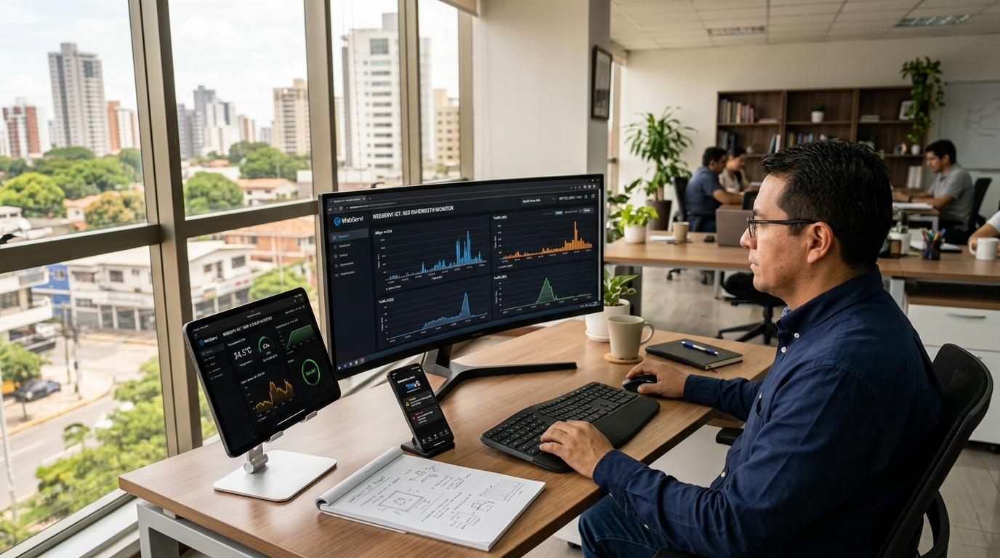
Verticales de Solución IoT & Tipos de Sensores Disponibles
Arquitectura estandarizada sobre plataformas ThingsBoard y Home Assistant: integración de sensores de campo industriales, protocolos LoRaWAN, Modbus RS485, SNMP y MQTT para monitoreo centralizado y control en tiempo real.
Infraestructura TI, Redes & Servidores
IT Infrastructure & NOCEnergía Solar, Inversores & Respaldos
Smart Energy & StorageGestión de Agua, Tanques & Pozos
Smart Water & MeteringAgroindustria, Silos & Clima
Smart Farming & Grain StorageInmótica, Edificios & Oficinas
Smart Buildings & OfficesSCADA Industrial & Maquinaria
Industrial IoT & Predictive MaintenanceEjemplos de Aplicación y Casos de Uso Empresariales
Supervisión remota, analítica en tiempo real y automatización operativa adaptada a las necesidades reales de su negocio: ahorro de costos, prevención de incidentes y control absoluto desde cualquier dispositivo.
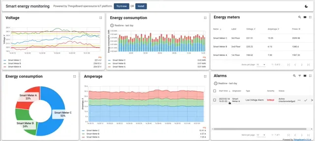
Eficiencia & CostosEnergía Inteligente
Monitoreo continuo de consumo eléctrico, paneles solares y demanda por áreas. Detección inmediata de picos de potencia innecesarios y cobros indebidos.
- ✓ Reducción demostrada de hasta un 30% en factura eléctrica.
- ✓ Alertas instantáneas por sobrecargas y desbalances de fase.
- ✓ Paneles ejecutivos de consumo por sucursal o máquina.
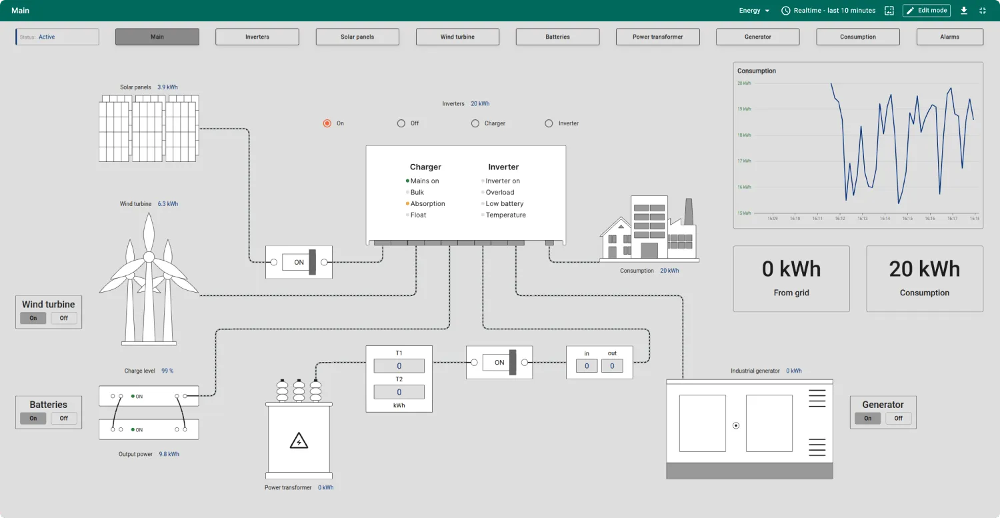
SCADA IndustrialSCADA de Energía & Plantas
Supervisión gráfica y control de subestaciones, generadores diésel y bancos de capacitores para plantas de producción continua sin interrupciones.
- ✓ Sincronización automática de grupos electrógenos de respaldo.
- ✓ Conmutación remota de cargas críticas durante contingencias.
- ✓ Auditoría histórica para cumplimiento normativo y peritajes.
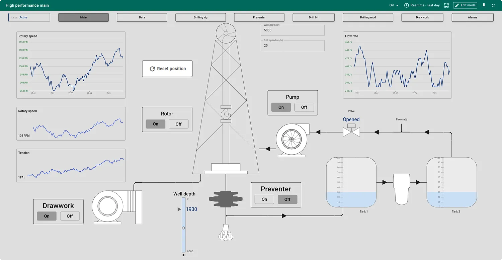
Oil & GasPetróleo, Gas & Pozos
Control remoto de presiones de cabeza de pozo, bombeo electrosumergible y válvulas críticas en yacimientos remotos mediante telemetría satelital o LoRaWAN.
- ✓ Alerta temprana de sobrepresión y corte preventivo de fugas.
- ✓ Reducción de traslados físicos de cuadrillas a zonas aisladas.
- ✓ Telemetría confiable certificada para atmósferas explosivas.
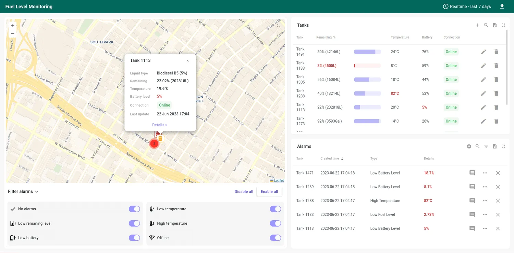
AlmacenamientoNivel de Tanques & Diésel
Medición continua de nivel en tanques de diésel, químicos, agua y aceites. Detección inmediata de extracciones no autorizadas o vaciados sospechosos.
- ✓ Detección de robo o ordeñe de combustible en tiempo real.
- ✓ Planificación logística exacta de reabastecimiento sin quiebres.
- ✓ Sensores ultrasónicos y de presión hidrostática sin perforación.
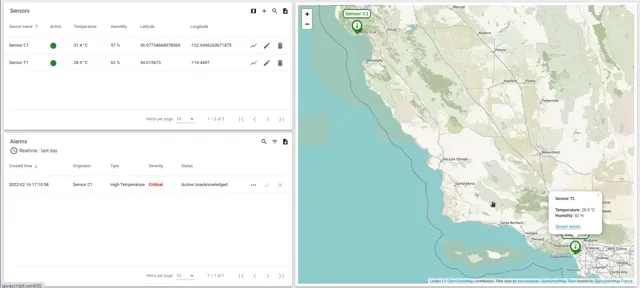
Ambiente & ClimaMonitoreo del Clima & Ambiente
Redes de estaciones meteorológicas para medir velocidad y ráfagas de viento, radiación solar, humedad y lluvias acumuladas en predios extensos.
- ✓ Protección de antenas y torres ante ráfagas severas.
- ✓ Históricos climáticos georreferenciados para peritajes de seguros.
- ✓ Activación automática de protecciones climáticas en campo.
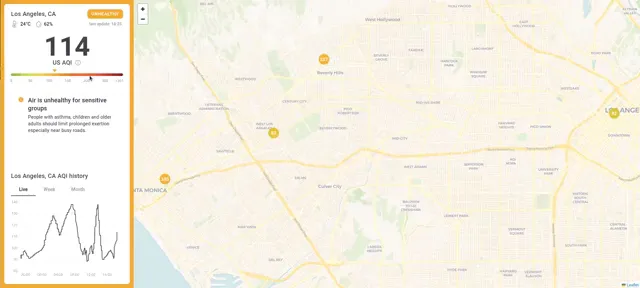
Salud AmbientalCalidad del Aire (AQI)
Supervisión en tiempo real de material particulado PM2.5 / PM10, gases tóxicos y humos derivados de quemas o polución urbana e industrial.
- ✓ Detección oportuna de humo e incendios forestales cercanos.
- ✓ Protección activa de la salud del personal operativo en planta.
- ✓ Activación automatizada de filtros y purificadores de aire.
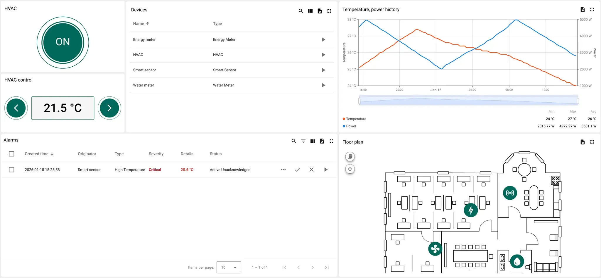
Espacios CorporativosOficinas Inteligentes
Control integral de aire acondicionado centralizado, iluminación adaptativa y sensores de presencia humana sin invadir la privacidad visual del equipo.
- ✓ Apagado automático de climatización en salas desocupadas.
- ✓ Aumento de la productividad con control de CO₂ en reuniones.
- ✓ Gestión centralizada desde el celular de la gerencia o administración.
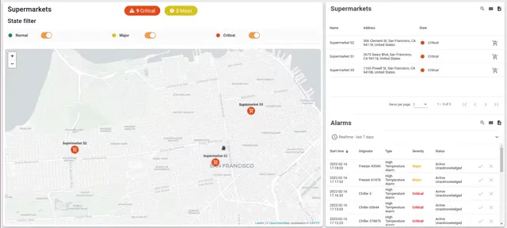
Retail & ComercioTiendas Inteligentes & Aforo
Conteo automatizado de visitantes, control de aforo por cámaras de IA, temperatura de vitrinas frigoríficas y estantes inteligentes para maximizar ventas.
- ✓ Métricas precisas de afluencia, horas punta y tasa de conversión.
- ✓ Cero pérdidas por descomposición en heladeras comerciales.
- ✓ Notificación en caja cuando el local alcanza el límite de clientes.
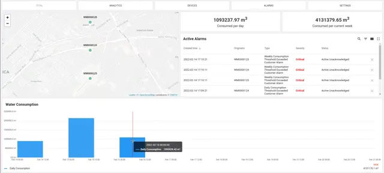
Recursos HídricosConsumo de Agua & Fugas
Telemetría de caudal en redes de agua potable, condominios e industrias. Detección automática de pérdidas nocturnas y roturas de tuberías ocultas.
- ✓ Identificación inmediata de fugas subterráneas antes del daño.
- ✓ Facturación precisa sin necesidad de lectura presencial manual.
- ✓ Corte remoto de suministro por electroválvula ante siniestros.
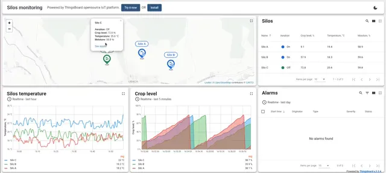
AgroindustriaAgricultura Inteligente (Smart Farming)
Monitoreo del perfil de humedad del suelo a distintas profundidades, salinidad (EC) y temperatura para maximizar el rendimiento por hectárea.
- ✓ Cobertura de hasta 15 km de distancia con tecnología LoRaWAN.
- ✓ Decisión de siembra y cosecha basada en datos reales de suelo.
- ✓ Sensores autónomos con batería de más de 5 años de vida útil.
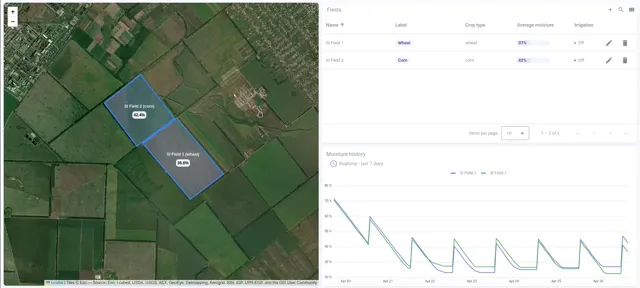
Agro & JardineríaIrrigación Controlada
Automatización de bombas y sectores de riego por goteo o pivote en función del clima real previsto y la tensión hídrica de la planta.
- ✓ Suspensión automática de ciclos si se detectan lluvias recientes.
- ✓ Ahorro del 45% de agua y energía eléctrica de bombeo.
- ✓ Apertura y cierre de válvulas solares desde la app móvil.
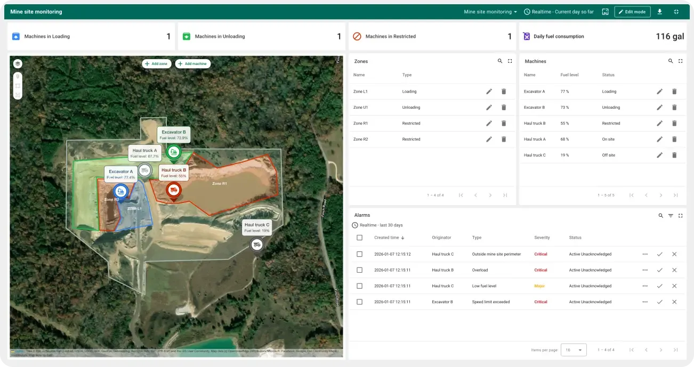
Logística & MaquinariaRastreo de Flotas & Activos
Geolocalización satelital en tiempo real de camiones, tractores, excavadoras y activos móviles en predios industriales, canteras o rutas.
- ✓ Delimitación de geocercas con alerta si un equipo sale del predio.
- ✓ Control de horas de motor para mantenimiento predictivo exacto.
- ✓ Telemetría de velocidad, frenadas bruscas y consumo diésel.
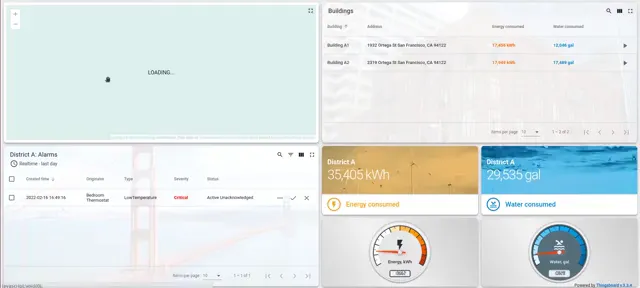
Seguridad CiudadanaMonitoreo de Tráfico & Situaciones
Analítica urbana y de condominios: conteo de vehículos, detección de embotellamientos, botones de pánico asistenciales y prevención de situaciones de acoso.
- ✓ Botones de pánico inalámbricos para alerta inmediata de auxilio.
- ✓ Detección de velocidad y maniobras imprudentes en vías internas.
- ✓ Notificación en vivo al centro de control y garita de guardia.
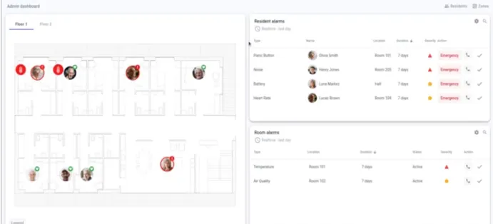
Salud & BienestarAsistencia Médica & Telecuidado
Supervisión continua para clínicas, geriátricos y cuidado asistido: detección de caídas, temperatura de vacunas en cadena de frío y alertas SOS para pacientes.
- ✓ Trazabilidad de cadena de frío para biológicos y medicamentos.
- ✓ Radares de caída sin cámaras invasivas para proteger la dignidad.
- ✓ Notificación inmediata al personal de enfermería ante llamados SOS.
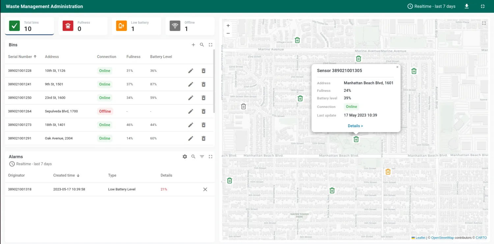
SostenibilidadGestión Inteligente de Residuos
Sensores de llenado ultrasónico instalados en contenedores de basura urbanos, fabriles y de reciclaje para optimizar rutas de camiones recolectores.
- ✓ Recolección dinámica: los camiones solo acuden a tachos llenos.
- ✓ Reducción de hasta un 40% en costos de combustible diésel.
- ✓ Alerta de fuego o temperatura anómala en basureros industriales.
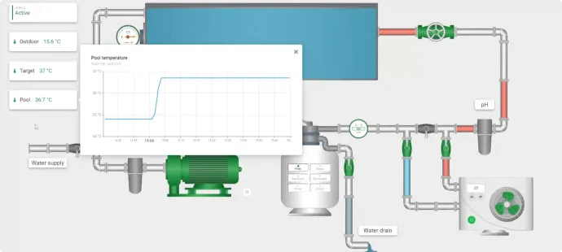
Hotelería & ClubesPiscinas, Balnearios & Químicos
Dosificación automatizada de cloro y reguladores de pH, encendido de filtros y control térmico en complejos deportivos, clubes y hoteles de alto estándar.
- ✓ Calidad de agua cristalina y segura para bañistas sin errores.
- ✓ Ahorro del 25% en insumos químicos por inyección exacta.
- ✓ Panel visual con diagramas de tuberías y bombas activas.